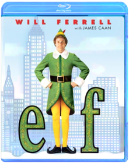

Beavis and Butt-Head: Butt-O-Ween/Do Christmas Mike Judge10 Episodes in total featuring: BUTT-O-WEEN: 'Tis the season for terrorizing your neighbors. And these classic Beavis and Butt-Head episodes have tricks and treats so sweet you'll get a stomachache. The hapless mischief-makers dress up for Halloween, hang out with a psychopathic murderer, screw up lame pranks, and go door to door selling candy. So, smash that pumpkin and turn off the lights. Beavis and Butt-Head are about to make you scream — with laughter. BEAVIS AND BUTT-HEAD DO CHRISTMAS: 'Tis the season to be cool, as Beavis and Butt-Head star in their own twisted versions of two holiday classics. The ghosts of Christmas past, present, and future struggle to teach a scrooge-like Beavis the true meaning of Christmas, while Charlie the Angel comes down from heaven to show Butt-Head how much better life would be without him. Will Beavis and Butt-Head learn their lesson? Does a snowflake have a chance in hell?Beavis and Butt-Head: Do Christmas Yvette KaplanBeavis and Butt-Head are (gasp) separated on Christmas Eve and each experiences a variation on classic holiday tales. While Beavis experiences a (sadly temporary) change of heart after visits from the spirits of Christmas past, present, and future, Butt-Head is visited by Charlie the Angel, who shows him how much better life would be without him ... if only he would just jump from that bridge. Somewhere, Dickens and Capra are turning in their graves, but this is a show that a B&B diehard could definitely watch once a year. —Tom KeoghBeerfest After a humiliating false start in Germany's super-secret underground beer competition, America's unlikely team vows to risk life, limb and liver to dominate the ultimate chug-a-lug championship. The laughs are on the haus!
DVD Features:
Audio Commentary:Two commentaries! Commentary 1: Jay Chandrasekhar and Steve Lemme discuss the finer points of drinking games and answer their critics. Commentary 2: Kevin Heffernan, Paul Soter and Erik Stolhanske share their behind-the-scenes buzz.
Deleted Scenes:With two optional commentaries: 1) by Jay Chandrasekhar and Steve Lemme, and 2) by Kevin Heffernan, Paul Soter and Erik Stolhanske
Featurette:Rule #1... Everyone who has consumed has committed a party foul. Filmmakers reveal the most egregious mishaps from the set and beyond.
Interviews:With the Flog Fluffer - meet the man behind the green goo
Other:Beer 101 History Lesson: The animated history of beer taught by director Jay Chandrasekhar and the lizards.
Theatrical TrailerCHRISTMAS STORY CHRISTMAS STORY (BLU-RAY/1983)
CHRISTMAS STORY (BLU-RAY/1983)CHRISTMASChristmas Vacation Make merry as Chevy Chase, Beverly D'Angelo, Randy Quaid and an ensemble of comedy favorites strive to gift-wrap the "perfect Christmas" for the Griswold family. The most successful of the three vacations. Year: 1989 Director: Jeremiah S. Chechik Starring: Chevy Chase, Beverly D'Angelo, Randy Quaid,Despicable Me 2 Gregory Perler, Chris Renaud, Pierre CoffinGru, his adorable girls, and the mischievous Minions are back with a cast of unforgettable new characters in the blockbuster sequel to the worldwide phenomenon. Just as Gru has given up being super-bad to be a super-dad, the Anti-Villain League recruits him to track down a new criminal mastermind and save the world. Partnered with secret agent Lucy Wilde, Gru, along with the wildly unpredictable Minions, must figure out how to keep his cover while also keeping up with his duties as a father. Assemble the Minions for laugh-out-loud comedy in "one of the funniest, most enjoyable movies ever!" (MovieGuide)Die Hard John McTiernanBruce Willis stars as New York City Detective John McClane, newly arrived in Los Angeles to spend the Christmas holiday with his estranged wife (Bonnie Bedelia). As Mclane waits for his wife's office party to break up, terrorists take control of the building. While the terrorist leader, Hans Gruber (Alexander Godunov) round up hostages, McClane slips away unnoticed. Armed with only a service revolver and his cunning, McClane launches his own one-man war. A crackling thriller from beginning to end, Die Hard explodes with heart-stopping suspense.Elf  Jon FavreauThis hilarious Christmas film tells the tale of a young orphan child who mistakenly crawls into Santa's bag of gifts on Christmas Eve and is transported back to the North Pole and raised as an elf. Years later Buddy learns he is not really an elf and goes on a journey to New York City to find his true identity.Goonies / Gremlins / Gremlins 2 Newly released bluray dvd triple feature Goonies Gremlins Gremlins 2Groundhog Day Harold RamisBill Murray is at his wry, wisecracking best in this riotous romantic comedy about a weatherman caught in a personal time warp on the worst day of his life. Teamed with a relentlessly cheerful producer (Andie MacDowell) and a smart-aleck cameraman (Chris Elliott), TV weatherman Phil Connors (Bill Murray) is sent to Punxsutawney, Pennsylvania, to cover the annual Groundhog Day festivities. But on his way out of town, Phil is caught in a giant blizzard, which he failed to predict, and finds himself stuck in small-town hell. Just when things couldn't get any worse, they do. Phil wakes the next morning to find it's Groundhog Day all over again... and again... and again.A Very Harold & Kumar Christmas Todd Strauss-SchulsonFollowing years of growing apart, Harold Lee (Cho) and Kumar Patel (Penn) have replaced each other with new friends and are preparing for their respective Yuletide celebrations. But when a mysterious package mistakenly arrive at Kumar’s door on Christmas Eve, his attempts to redirect it to Harold’s house ends with the “high grade” contents – and Harold’s father-in-law’s prize Christmas tree – going up in smoke. With his in-laws out of the house for the day, Harold decides to cover his tracks, rather than come clean. Reluctantly embarking on another ill-advised journey with Kumar, through New York City, their search for the perfect replacement tree takes them through party heaven – and almost blows Christmas Eve sky high.He-Man & She-Ra: A Christmas Special Bill Reed, Ernie SchmidtThe holiday season comes to the magical worlds of Eternia and Etheria in He-Man and She-Ra A Christmas Special! When Orko accidentally winds up on Earth during the Christmas winter he befriends two children who share stories of the goodwill and merriment that the holidays embrace. When they finally return to Eternia the holiday spirit is spread amongst the entire Royal Palace but this overflowing goodwill attracts the unwelcome attention of Horde Prime and Skeletor. Will the combined power of He-Man She-Ra and the spirit of Christmas be enough to stop them?System Requirements:Running Time: 45 minutesFormat: DVD MOVIE Genre: CHILDREN/FAMILY UPC: 787364630790Home Alone / Home Alone 2: Lost In New York Home Alone CollectionHome Alone:
Eight-year-old Kevin McCallister (Macaulay Culkin) has become the man of the house, overnight! Accidentally left behind when his family rushes off on a Christmas vacation, Kevin gets busy decorating the house for the holidays. But he's not decking the halls with tinsel and holly. Two bumbling burglars are trying to break in, and Kevin's rigging a bewildering battery of booby traps to welcome them!
Home Alone 2: Lost in New York:
Kevin McCallister (Macaulay Culkin) is back! But this time he's in New York City with enough cash and credit cards to turn the Big Apple into his own playground! But Kevin won't be alone for long. The notorious Wet Bandits, Harry and Marv (Joe Pesci and Daniel Stern), still smarting from their last encounter with Kevin, are bound for New York too, plotting a huge holiday heist. Kevin's ready to welcome them with a battery of booby traps the bumbling bandits will never forget!How the Grinch Stole Christmas  How the Grinch Stole Christmas Ron HowardInside A Snowflake Exists The Magical Land Of Whoville. Inwhoville, Live The Who'S An Almost Mutated Sort Of Munchkinlikepeople. All The Who'S Love Christmas, Yet Just Outside Of Theirbeloved Whoville Lives The Grinch. The Grinch Is A Nastycreature That Hates Christmas.Living Fireplace: Volume 2 Stephen D. SpivakThe #1 Selling Living Fireplace DVD Just Got Even Better! The perfect accessory for all home theater and flat-panel HDTVs!
Like a window to another world, the Living Fireplace Volume 2 Blu-ray from Screen Dreams transforms your TV into vibrant Yule Log fireplaces that crackle and pop! Set the mood and watch as it instantly enhances the ambience of any room decor. Ideal for everyday enjoyment or entertainment, Living Fireplace Volume 2 Blu-ray DVD adds a beautiful new dimension to your TV.
Screen Dreams is the original producer and leading distributor of DVD Screensavers for flat-panel HDTVs. They are changing the way TVs are used, at home and in business, by making blank TV screens beautiful with their unique DVD screensavers.
Features:
Proven success at Retail/Warehouse clubs.Content is superior - Best of Class.Available at all major distributors.Multiple Retail display options upon request.20 Total Unique Scenes.Filmed in HD ? 1080 x 720.Works on all Plasma, LCD, DLP, CRT, Projection, Home Theater HDTV's.Over 10+ classic music tracks, including: The First Noel, Twelve Days of Christmas, Joy To The World, Silent Night, We Wish You A Merry Christmas, Jingle Bells, and Deck the Halls.New Year's Eve Garry MarshallDirector/producer Garry Marshall brings together an stellar ensemble cast to celebrate love, hope, forgiveness, second chances and fresh starts, in intertwining stories told amidst the pulse and promise of New York City on the most dazzling night of the year.The Nightmare Before Christmas Nightmare Before ChristmasNow more astonishing and spectacular than ever, The Nightmare Before Christmas jumps off the screen and into your living room, immersing your family in the jaw-dropping splendor and mind-boggling fun of Disney Blu-ray 3D!
Bored with the same old scare and scream routine, Pumpkin King Jack Skellington longs to spread the joy of Christmas. But his merry mission puts Santa in jeopardy and creates a nightmare for good little boys and girls everywhere.
Experience Tim Burton and Henry Selick's uncanny tale as it comes vividly to life right before your eyes! This Blu-ray 3D combo pack includes four ways to watch: Blu-ray 3D, Blu-ray, DVD and Digital Copy. Disney Blu-ray 3D - magic in a new dimension.The Original Christmas Classics Gift Set Jules Bass, Arthur Rankin Jr.Four original holiday favorites make the perfect stocking stuffer for the young and the young at heart. Includes Rudolph the Red-Nosed Reindeer (Burl Ives. 1964/65 min.), Santa Claus is Comin' to Town (Fred Astaire, Mickey Rooney. 1970/55 min.), Frosty the Snowman (Jimmy Durante. 1969/30 min.) and Frosty Returns (Jonathan Winters. 1992/25 min.). Animated. 2 Discs. Color/NR.Pee Wee's Playhouse Christmas Special Wayne OrrJoin the whole Playhouse gang for one of the wackiest Christmas specials ever with laughs for the whole family and all the imagination and charm of Saturday morning's most outrageous TV series, which became a cultural milestone when it aired from 1986 to 1991. In this unique triple Emmy« nominated Christmas special, Pee-wee gets into the spirit of the season with lots of singing, dancing and other holiday fun with his Playhouse pals and more than a dozen celebrity guest stars as you've never seen them before. Everything's going great, except Pee-wee's Christmas wish list is so long that there won't be enough presents for all the other kids in the world if he gets everything he wants! When Santa Claus pleads for help, Pee-wee reluctantly gets a lesson in the true meaning of Christmas. Cast includes: Cowboy Curtis (Laurence Fishburne), Reba the Mail Lady (S. Epatha Merkerson), and Miss Yvonne (Lynne Stewart). Guest stars include: Frankie Avalon, Whoopi Goldberg, Joan Rivers, Charo, Del Rubio Triplets, Annette Funicello, Magic Johnson, Dinah Shore, Grace Jones, Oprah Winfrey, k.d. lang, Little Richard, Zsa Zsa Gabor.The Polar Express Chris Van Allsburg, Robert ZemeckisAll the enchantment, all the adventure, all the joy of The Polar Express – all in astonishing true Blu-ray 3D! This instant holiday classic filmed in performance-capture animation by Robert Zemeckis and starring Tom Hanks now delivers a whole new cargoload of immersive Blu-ray™ magic. Reach out and grab your ticket as the exciting next dimension in home entertainment transports you to the North Pole in amazing fashion!The Simpsons: Christmas 1 Tim Long, Rob OliverFive classic Simpson family holiday misadventures! Includes Simpsons Roasting on an Open Fire," Mr. Plow," Miracle on Evergreen Terrace," Grift of the Magi" and She of Little Faith." 2003/color/92 min/NR/fullscreen.The Simpsons: Christmas 2 Tim Long, Rob OliverFeatures four Christmas-themed Simpsons episodes.The Simpsons: Treehouse of Horror Neil Affleck, Bob Anderson (VIII), Mikel B. Anderson, Wesley Archer, Carlos BaezaConsists of the following episodes: In this annual trilogy of terror, Homer attempts to kill his family in "The Shinning," Homer tries to fix a toaster and winds up altering the fabric of time itself in "Time and Punishment," and Principal Skinner serves students for lunch in "Nightmare Cafeteria." In this Halloween-themed anthology, advertising icons go berserk in "Attack of the 50 Foot Eyesores," Groundskeeper Willie invades the children's dreams in "Nightmare on Evergreen Terrace," and Homer enters a 3-D world of computer animation in "Homer 3." This Simpson showcase features a terrifying look at Bart's evil twin in "The Thing and I," Lisa creating a miniature world in "The Genesis Tub," and aliens stealing the identities of Bill Clinton and Bob Dole in "Mr. Kang Goes To Washington." In "Hex and the City," a gypsy curses Homer, bringing misery to everyone he loves. In "House of Whacks," a computer (Pierce Brosnan) takes over the Simpson house and attempts to kill Homer for Marge's love. And in "Wiz Kids," Bart and Lisa are students at a school for wizards, where they foil the evil Lord Montymort.South Park: Christmas in South Park South ParkMr. Hankey the Christmas Poo and Charlie Manson host two touching holiday episodes: with them and your favorite South Park characters you'll rediscover what Christmas is really all about. First, sing along with "Mr. Hankey's Christmas Classic," a hilarious collection of carols—including Kyle and his family doing a particularly irreverent, a cappella version of "Dreidl Dreidl Dreidl," and there's nothing like Satan's "Christmastime in Hell"—surprising who you'll see down there. And Mr. Hankey definitely leaves his mark on his finale, too. The next episode is "Merry Christmas, Charlie Manson": Stan joins a trip to Cartman's grandma's house where the Cartmans are happily surprised that Uncle Howard is able to show up, having broken out of jail with his cellmate Charlie Manson.
The tape has a bonus third program: the "outrageous British documentary" Goin' Down to South Park, a half-serious, half-tongue-in-cheek look at the creators and production crew who animate South Park. Trey Parker and Matt Stone, from their hot tub, discuss the origin of South Park and how the merchandising, money, and fame have made their lives so much easier. —Erik Macki |


 Made with Delicious Library
Made with Delicious Library